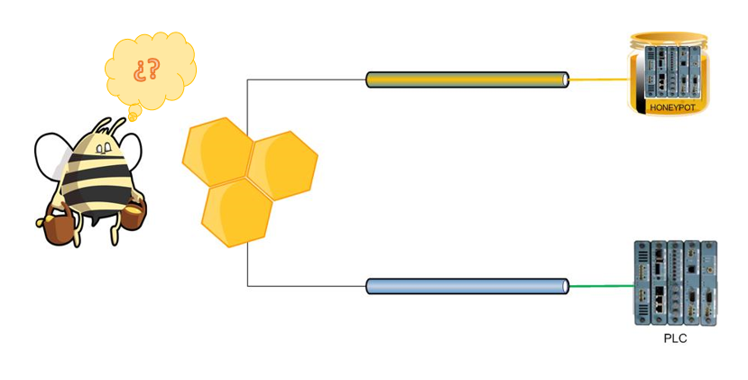

Para hacer referencia a las Honeynets, primero es necesario comprender los Honeypots. Por ello, se define a un Honeypot (tarro de miel) como un recurso de red vulnerable cuyo propósito es ser examinado o comprometido por cualquier atacante, de modo que no resuelven fallos de seguridad en la red, sino que su utilidad recae en brindar información sobre los posibles atacantes que pudieran comprometer los sistemas reales.
Aunque pareciera contraproducente contar con un recurso de red que no corrige fallos de seguridad e inclusive permite la entrada de ataques a la red, lo cierto es que hay motivos que justifican su uso. De tal forma, lo que se busca es contar con vulnerabilidades controladas que presenten información engañosa a los atacantes, para descubrir sus acciones y tomar acciones que impidan que logre entrar al sistema real.
 Honeypots.Características de los Honeypots
- Tienen carácter preventivo ya que no disuadirá a los atacantes.
- Son elementos pasivos que permiten detectar la actividad de los atacantes.
- Son valiosos para actividades de reacción. Al informar sobre el estado del sistema podemos ejecutar comandos que le impidan al atacante el acceso al resto del sistema.
Ubicación de los Honeypots
Antes del firewall:
Permite un acceso directo a los atacantes al no filtrar el tráfico peligroso, por lo que se obtienen estadísticas confiables sobre los posibles ataques a la red. Además, se destaca que el Honeypot podrá ser atacado sin representar peligro para el resto de la red. No obstante, debido a la facilidad para ser atacado, consumirá mucho ancho de banda y espacio en los ficheros de log.
 Antes del firewall.
Antes del firewall.
Detrás del firewall:
Permite la detección de firewalls mal configurados y máquinas infectadas por virus pero requiere uso de firewalls adicionales o sistemas de bloqueo, dado que en esta posición, si el atacante logra comprometer el sistema tendrá acceso a la red. Sin embargo, a veces se opta por esta posición si se quiere detectar atacantes internos o no se puede utilizar una dirección IP externa para el Honeypot.
 Detrás del firewall.
Detrás del firewall.
En la zona desmilitarizada:
Se caracteriza por juntar en el mismo segmento a los servidores de producción con el Honeypot y controlar el peligro de su uso por medio de un firewall que lo aísla de la red local.
 Zona desmilitarizada.
Zona desmilitarizada.